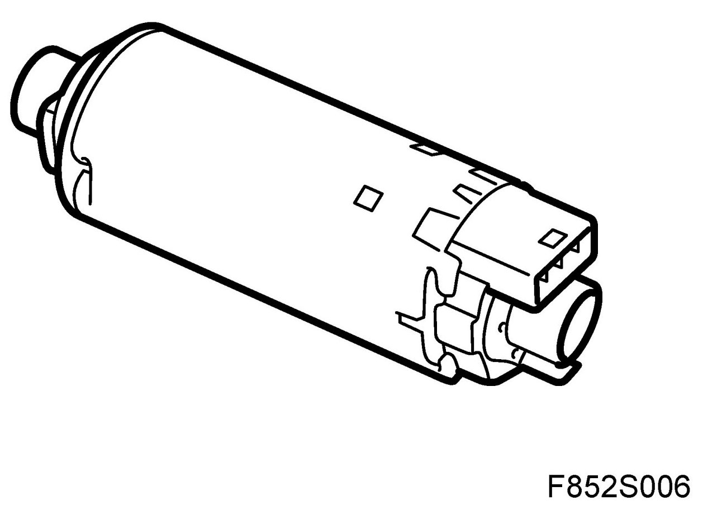
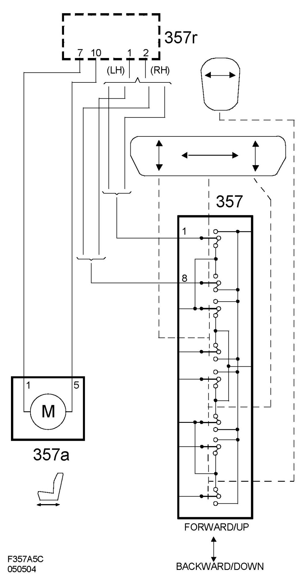

Motor, Length Adjustment, Electrically Operated Seat (357A), CV
Motor, Length Adjustment, Electrically Operated Seat (357a), CV
Location

Main task
To adjust the legroom.
Type
The DC motor which drives a screw in respective right and left seat rails, the screw is fixed on the seat chassis and the nut is fixed on the floor rail for respective sides.
Connecting the seat
The motor is connected to the relay unit pins 7 and 10. During normal length adjustment, the motor is powered from the switch (357) via the relay unit. For the Easy Entry function, the motor is powered from the relay unit. The polarity of the outputs are reversed to change the direction of the motor.
